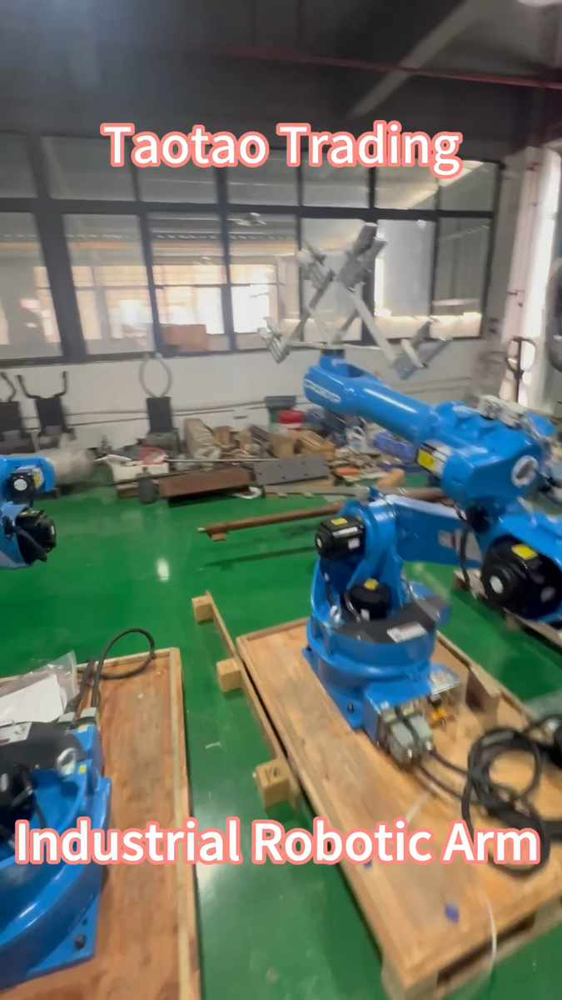

Taotao-owned factory footage. The image provides production context; it does not verify the capacity, approval or controls of any supplier discussed here.
You have seen a factory video. The equipment appears real and the supplier can show a polished sample. Is that enough to release a production deposit?
It establishes context, not the control of your configuration. The next question is: what will the supplier check, record and do when production differs from the agreed specification?
Why this decision matters
For regulated vehicle products, the UK's Vehicle Certification Agency (VCA) describes Conformity of Production as the ability to make a series of products matching the approved specification, performance and marking requirements. It identifies quality systems and product-specific control plans as separate elements. This is an official example of how ongoing control is evidenced—not a claim that every imported product needs vehicle type approval.
The transferable purchasing principle is narrower: a factory visit shows a place and process at one moment. It does not, by itself, show the inspection criteria, records or response to deviations for a buyer's order.
Ask for a one-page production-control map
| Link | Request from the supplier | Check yourself |
|---|---|---|
| Product identity | Quoted model, revision, material and key options | Do these match the order and sample? |
| Critical features | Features affecting fit, safety, function or appearance | Are acceptance limits written and measurable? |
| Checkpoint | Incoming, in-process or final check for each feature | Who checks, how often and by what method? |
| Record | Redacted inspection or test-record example | Can a result be traced to a dated lot or batch? |
| Change and failure | Rule for substitutions and nonconforming units | Is buyer approval required before controlled changes? |
This is Taotao's purchasing worksheet, not an official certification form. Ask for redacted examples; a supplier need not expose another customer's confidential records.
How to verify the answer
Pick one critical feature, then follow it through all five links. For an aluminum window, that might be a profile dimension or hardware set. For a motorcycle helmet, it could be a specified component or marking. If the specification says one thing and the check sheet identifies a different revision, the chain is broken.
VCA's control-plan guidance describes checks or activities that verify continuing conformity with the approved specification, marking and performance. It says plans should account for particular types or models. That is why a generic “QC passed” photo is weaker than a model-linked record.
Red flags and limitations
- The supplier shows machines but cannot identify which site or process will make the quoted item.
- “100% inspection” is claimed without a defined characteristic, method or record.
- A sample report has no link to the order revision or actual batch.
- A material, component or subcontractor can change without written notice.
- The seller treats an ISO logo, video or visit as proof of product-specific approval.
Do not infer capacity, compliance, financial health or future consistency from a single visit. For regulated products, ask the relevant authority, laboratory or qualified destination-market adviser to assess the exact requirements.
Continue / Pause / Escalate
Continue when the exact ordered configuration, control points, sample records and change owner line up.
Pause when the factory appears credible but one material evidence link is missing.
Escalate when a safety-critical or regulated feature differs, a test or approval scope is unclear, or production changes require specialist review.
Before your next deposit, request the five-link map for one critical feature. That trace often tells you which remaining questions matter most.